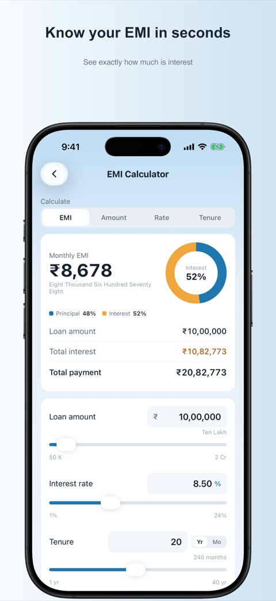
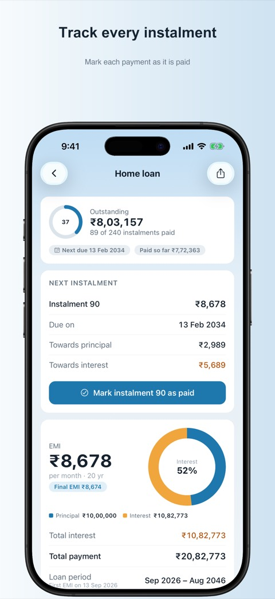
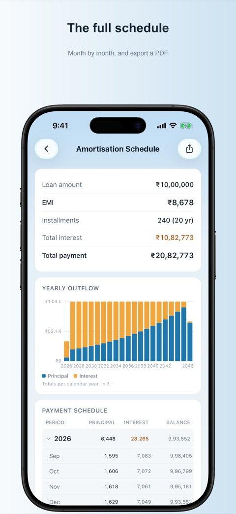

Work out your EMI, track every loan, see your home loan tax benefit and plan your savings. Free, with no account and no ads.
Get it on the App Store


EMI calculator, amortisation schedule, part payment and prepayment, advance EMI, moratorium, step-up EMI, loan comparison and refinance.
Save your loans, mark each EMI as paid, see the interest still to pay and your debt-free date. Get a reminder before each EMI and a Next EMI widget.
The tax you save under Section 80C and Section 24(b), for each financial year, in the old and new regime.
The GST and fee you still pay on a no-cost EMI, and the real rate. Try it on the web.
SIP, SWP, STP, lumpsum, goal SIP, retirement, FD, RD, PPF, NPS and Sukanya Samriddhi.
GST, HRA exemption, currency converter, percentage, discount, tip split, fuel cost, date difference and age.
There is no sign-in, no ads and no tracking. Your loans are stored only on your iPhone. You can lock the app with Face ID, back up to a file and restore it on a new phone, and export any schedule as a PDF or a CSV file for Excel. Every amount is in rupees with Indian digit grouping. Read the privacy policy.
Report a problem or ask a question at github.com/itsaakashpatel/emi-loan-calculator/issues. Please say which iOS version you use and which screen the problem appears on.